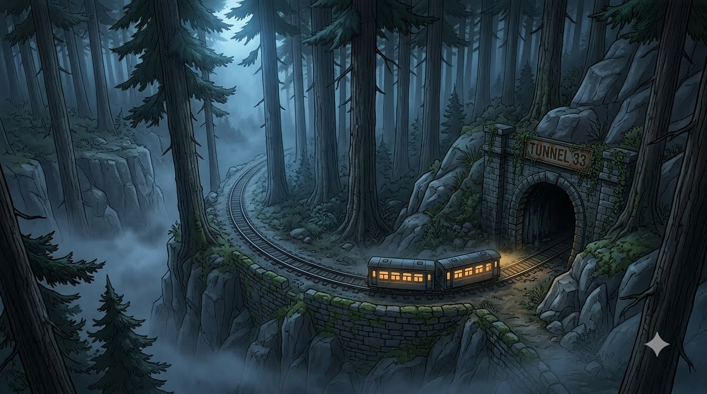

Upload Your Photos
Drag or select watermark-affected images. JPG, PNG and WebP are supported. Batch processing is available for multiple images.
Remove supported visible Gemini watermarks from images and videos
directly in your browser.
No account required — browser-local processing.

Use the browser-based Gemini watermark remover to clean supported visible watermark regions from compatible images. The restoration process runs locally in your browser rather than requiring a server-side image upload.
Remove supported visible Gemini watermarks in three simple steps. Your image processing workflow runs directly in your browser.
Drag or select watermark-affected images. JPG, PNG and WebP are supported. Batch processing is available for multiple images.
The browser runs the supported local restoration engine to process visible Gemini watermark patterns without a server-side processing step.
Preview the processed result and download individual images or a ZIP. Video processing is currently available as a beta browser workflow.
Browser-local image processing · batch workflows · supported video cleanup · no account required
Uses the integrated browser restoration engine for supported visible Gemini watermark patterns.
Designed around supported visible watermark variants found in compatible generated media.
Select multiple images, process them locally, then download results individually or as a ZIP.
The image cleanup workflow is designed to run in your browser without a server-side processing step.
Accepts JPG, PNG and WebP images and exports processed PNG results.
Process supported visible Gemini-style marks in compatible browsers. Video capabilities may vary by source and browser.
Start processing your media without creating an account or signing in.
Designed for current browsers, with video codec and performance support varying by device and browser.
Built with documented open-source browser components and third-party dependencies listed in the repository.
Answers about Gemini watermark removal, supported files, browser processing and the current video beta.
Select an image, let the browser process the supported watermark pattern, preview the result, and download the cleaned image.
Yes, video processing is available as a beta workflow for supported visible watermark patterns. Browser codec support, device performance and the source video can affect the result.
No. The site is designed to let you start processing without signing in or creating an account.
The processing workflow is designed to run in your browser. The site may still contact external services to load JavaScript libraries or other website resources.
JPG, PNG and WebP are supported for the image workflow. Processed images are exported as PNG.
The interface accepts common MP4, WebM and MOV files. Actual playback and export support depends on the browser and its available codecs.
No. The tool is intended for supported visible watermark patterns. Results can vary with the source, watermark appearance, compression and video motion.
No. This project is intended for visible watermark cleanup and does not claim to remove invisible provenance signals.
Upload a video you are authorized to edit and process the visible watermark locally in your browser.